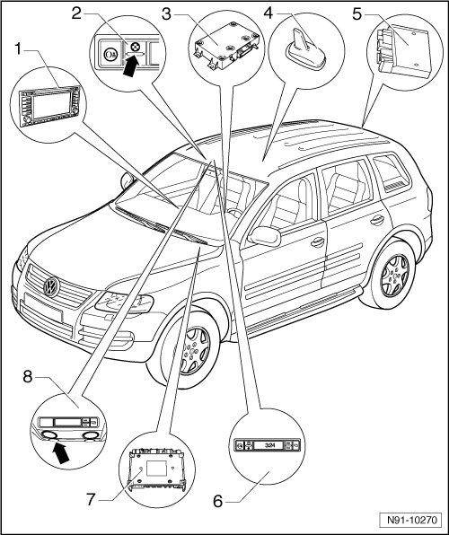

Telematics System Overview
Telematics System Overview

1 Radio/Navigation Display Control Module (J503)
2 Indicator lamp (K186)
• installed in Telematics Control Head
• Designed as LED
• Troubleshooting on Telematics system, refer to --> [ Telematics System ] Initial Inspection and Diagnostic Overview
3 Telematics Control Module (J499)
• Notes for removing and installing Telematics Control Module, refer to --> [ Telematics Control Module ] Telematics Control Module
• installed below front right seat
• Removing and installing, refer to --> [ Telematics Control Module ] Telematics Control Module
4 Telephone Antenna (R65)
• installed at front on roof
• Removing and installing
5 Comfort System Central Control Module (J393)
•
• The functions unlocking and locking doors for Telematics system are carried out via Comfort System Central Control Module
• installed in right of luggage compartment
6 Telematics Control Head (E264)
• in stall in front in roof console
• Removing and installing, refer to --> [ Control Head for Telematics ] Control Head for Telematics
• Description of function of buttons in Telematics control head, refer to --> [ Functionality of Buttons in Telematics Control Head ] Functionality of Buttons in Telematics Control Head
7 Vehicle Electrical System Control Module (J519)
• Functions for emergency flasher blinking and operation of horn for Telematics system are carried out via Vehicle Electrical System Control Module.
• installed under instrument panel in driver's side footwell
8 Microphone (R38)
• installed in front roof console
• Removing and installing